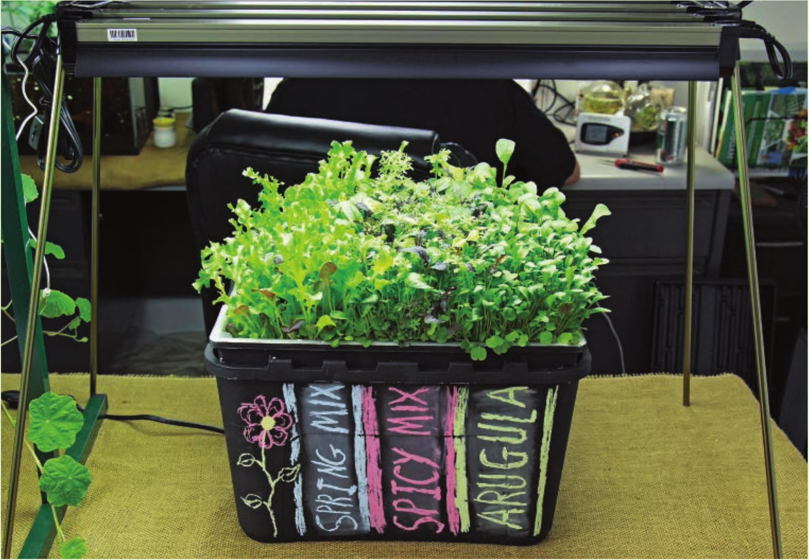

GROWING SYSTEM • Suitable Locations: Indoors, outdoors, or greenhouse • Size: Small to large • Growing Media: Perlite, expanded clay pellets, stone wool, or coco coir • Electrical: Required • Crops: Any crop depending on pot size FLOOD AND DRAIN THE FLOOD AND DRAIN TECHNIQUE goes by many names, including “ebb and flow" and “ebb and flood." These names all describe the irrigation method used in this garden design. A nutrient solution is pumped to flood a grow tray and then it drains. This is similar to the media bed design covered in the previous section, but flood and drain gardens do not fill the grow bed with substrate. Flood and drain gardens generally use pots filled with a hydroponic substrate or stone wool blocks. CROPS The flood and drain garden shown in the guide below can easily be modified for anything from microgreens to large flowering crops. A flood and drain garden can grow nearly any crop with a few adjustments to irrigation frequency, pot size, substrate selection, and flood height (drain height). LOCATIONS Suitable for any location. This garden will have similar issues as other garden designs if placed outdoors and exposed to heavy rain, the primary issue being the washing away and dilution of the nutrient solution. HYDROPONIC GROWING SYSTEMS 99
